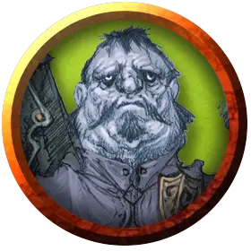

Блуто Крогаров
Bluto Krogarov
Средний Гуманоид (Человек), нейтрально-злой, именной НИП

Класс Доспеха 10
Хиты 4 (1к8)
Скорость 30 футов
| мод | спас | ||
|---|---|---|---|
| СИЛ | 10 | +0 | +0 |
| ЛОВ | 10 | +0 | +0 |
| ТЕЛ | 10 | +0 | +0 |
| мод | спас | ||
|---|---|---|---|
| ИНТ | 10 | +0 | +0 |
| МДР | 10 | +0 | +0 |
| ХАР | 10 | +0 | +0 |
Чувства пассивное Восприятие 10
Языки Общий
Опасность 0
Бонус мастерства +2
Действия
Дубина. Рукопашная атака оружием: +2 к попаданию, досягаемость 5 футов, одна цель. Попадание: Дробящий урон 2 (1к4).
Описание
Блуто Крогаров нищий алкоголик. Он отчаянно пытается поймать немного рыбы, чтобы позже обменять её на вино на постоялом дворе Синяя Вода. После того, как он не мог поймать ни одной рыбы за всю неделю, он похитил Арабэлль, полагая, что вистани приносят удачу. Он собирается принести её в жертву озеру, в надежде, что оно принесёт ему немного рыбы взамен.
Если персонажи понаблюдают за Блуто с берега несколько минут, или отправятся на лодке, чтобы поговорить с ним, он сталкивает свёрток брезента в воду, наблюдает, как он тонет и берёт в руки удочку, ожидая своей награды.
Блуто – бездушная оболочка, едва осознающая свои действия. Он не вооружён и не делает ничего, чтоб помочь или помешать персонажам.